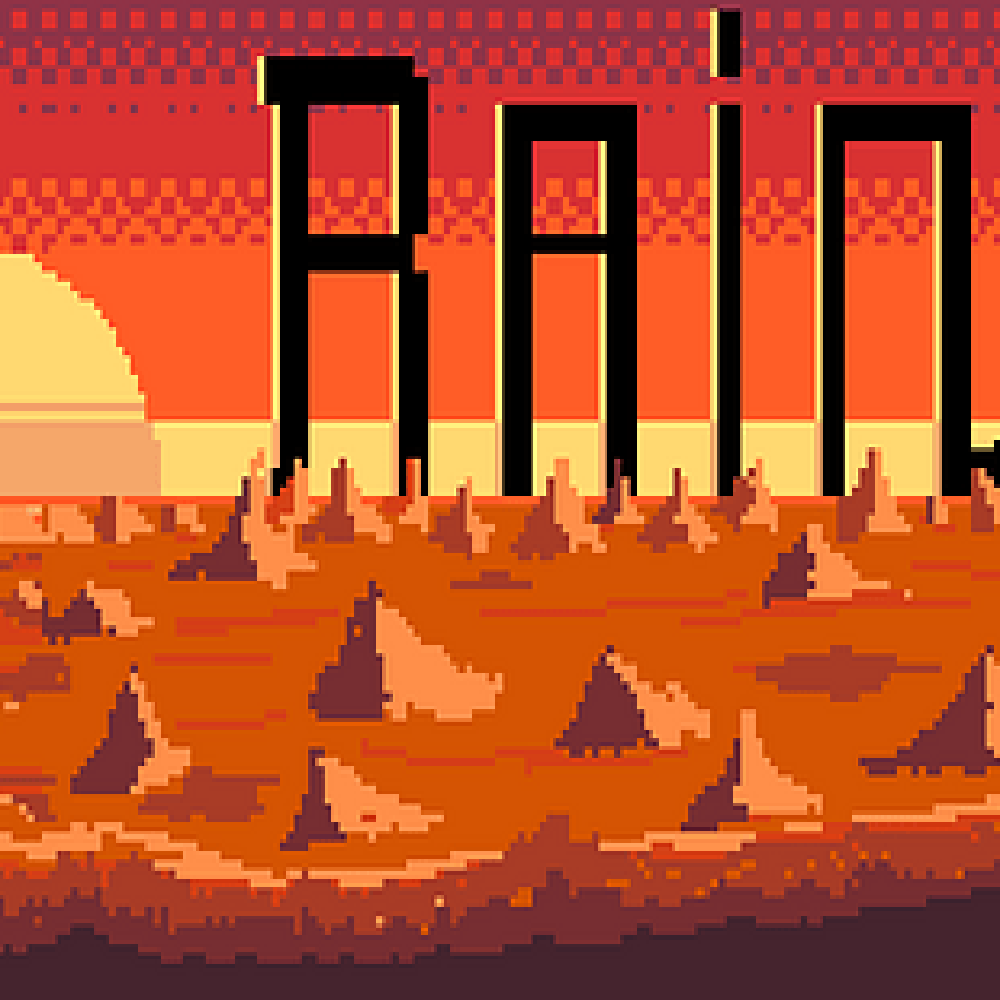

MMArmelade
Rain ist ein nasser Tower Defense Survival Shooter, bei dem Wasser deine wichtigste Ressource ist. Du befindest dich auf einem Wüstenplaneten mit riesigen Insekten, die dich und deine Rakete fressen wollen. Pflanze außerirdische Pflanzen, die dir helfen dich gegen die Alien-Käfer zu verteidigen, oder bekämpfe sie selbst mit dem, was sie am meisten hassen: Wasser!
Rain war das Produkt eines 3-tägigen Game Jams (MMAmelarde) und somit mein erstes schul- und arbeitsunabhängiges Software Gruppenprojekt. Also traf ich mich freitags nach der Fachhochschule mit einer Gruppe von game-affinen Freunden und gemeinsam schufen wir über das Wochenende den Tower Defense Topdown Shooter Rain.
Der Gam Jam war das erste mal, dass ich in einer größeren Gruppe (5 Personen) von Developer zusammenarbeitete. Mir wurde die Basics von Git erklärt, anfangs etwas holprig doch zu Ende funktionierte der Git Workflow im Team sehr gut. Da ich aus privaten Projekten schon einige Erfahrungen in Unity sammeln konnte ich recht schnell etwas zu dem Spiel Codetechnisch beitragen. So baute ich die Menüs und half anderen Mitgliedern bei ihrem Code. Als mein Team merkte, dass ich der einzige im Team war, der einigermaßen Bildnerisch begabt war bekam ich die Rolle des Designers und war für alle Assets und Animationen verantwortlich. Diese zeichnete ich dann auch.